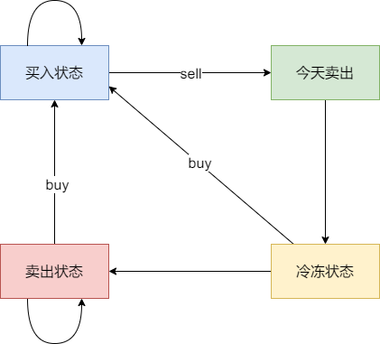
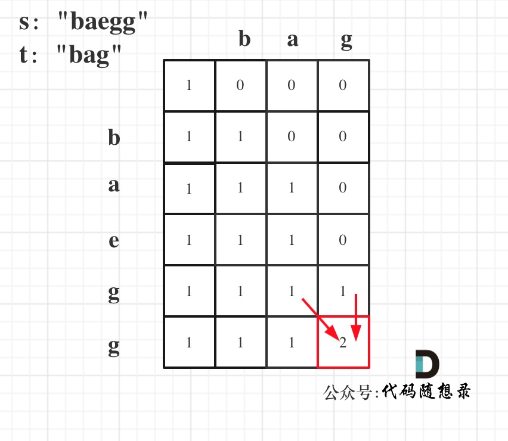

动态规划¶
9.1 基础题目¶
-
斐波那契数
-
爬楼梯
-
使用最小花费爬楼梯
-
不同路径
- 不同路径 II
-
整数拆分
- dp[i]：分拆数字i，可以得到的最大乘积为dp[i]。
dp[i] = max({dp[i], (i - j) * j, dp[i - j] * j})(i - j) * j：表示拆分为两个数相乘dp[i - j] * j：表示拆分为两个及两个以上数相乘
- 不同的二叉搜索树
- dp[i] += dp[以j为头结点左子树节点数量] * dp[以j为头结点右子树节点数量]
- dp[i] += dp[j - 1] * dp[i - j]
509. 斐波那契数¶
快速复习¶
状态定义必须包含限制条件；一维背包尤其注意正序或倒序。
详细题解¶
- 爬楼梯
补充思路： 依次明确 dp 含义、递推关系、初始化、遍历顺序和返回位置，再考虑空间压缩。
Python 实现¶
class Solution:
def fib(self, n: int) -> int:
if n < 2:
return n
return self.fib(n - 1) + self.fib(n - 2)
70. 爬楼梯¶
快速复习¶
- 使用最小花费爬楼梯
详细题解¶
- 使用最小花费爬楼梯
补充思路： 依次明确 dp 含义、递推关系、初始化、遍历顺序和返回位置，再考虑空间压缩。
Python 实现¶
# 空间复杂度为O(n)版本
class Solution:
def climbStairs(self, n: int) -> int:
if n <= 1:
return n
dp = [0] * (n + 1)
dp[1] = 1
dp[2] = 2
for i in range(3, n + 1):
dp[i] = dp[i - 1] + dp[i - 2]
return dp[n]
746. 使用最小花费爬楼梯¶
快速复习¶
- 使用最小花费爬楼梯 - 力扣（LeetCode） 4. 不同路径 5. 不同路径 II 6. 整数拆分
详细题解¶
- 不同路径
- 不同路径 II
- 整数拆分
Python 实现¶
class Solution:
def minCostClimbingStairs(self, cost: List[int]) -> int:
dp = [0] * len(cost)
dp[0] = cost[0] # 第一步有花费
dp[1] = cost[1]
for i in range(2, len(cost)):
dp[i] = min(dp[i - 1], dp[i - 2]) + cost[i]
# 注意最后一步可以理解为不用花费，所以取倒数第一步，第二步的最少值
return min(dp[-1], dp[-2])
62.不同路径¶
快速复习¶
状态定义必须包含限制条件；一维背包尤其注意正序或倒序。
详细题解¶
补充思路： 依次明确 dp 含义、递推关系、初始化、遍历顺序和返回位置，再考虑空间压缩。
Python 实现¶
class Solution:
def uniquePaths(self, m: int, n: int) -> int:
if m == 1 or n == 1:
return 1
return self.uniquePaths(m - 1, n) + self.uniquePaths(m, n - 1)
63. 不同路径 II¶
快速复习¶
状态定义必须包含限制条件；一维背包尤其注意正序或倒序。
详细题解¶
补充思路： 依次明确 dp 含义、递推关系、初始化、遍历顺序和返回位置，再考虑空间压缩。
Python 实现¶
class Solution:
def uniquePathsWithObstacles(self, obstacleGrid):
m = len(obstacleGrid)
n = len(obstacleGrid[0])
if obstacleGrid[m - 1][n - 1] == 1 or obstacleGrid[0][0] == 1:
return 0
dp = [[0] * n for _ in range(m)]
for i in range(m):
if obstacleGrid[i][0] == 0: # 遇到障碍物时，直接退出循环，后面默认都是0
dp[i][0] = 1
else:
break
for j in range(n):
if obstacleGrid[0][j] == 0:
dp[0][j] = 1
else:
break
for i in range(1, m):
for j in range(1, n):
if obstacleGrid[i][j] == 1:
continue
dp[i][j] = dp[i - 1][j] + dp[i][j - 1]
return dp[m - 1][n - 1]
343. 整数拆分¶
快速复习¶
dp[i]：分拆数字i，可以得到的最大乘积为dp[i]；- dp[i] = max({dp[i], (i - j) j, dp[i - j] j}) - (i - j) j ：表示拆分为两个数相乘 - dp[i - j] j：表示拆分为两个及两个以上数相乘 7. 不同的二叉搜索树 - dp[i] += dp[以j为头结点左子树节点数量] dp[以j为头结点右子树节点数量] - dp[i] += dp[j - 1] dp[i - j]
详细题解¶
- dp[i]：分拆数字i，可以得到的最大乘积为dp[i]。
dp[i] = max({dp[i], (i - j) * j, dp[i - j] * j})(i - j) * j：表示拆分为两个数相乘dp[i - j] * j：表示拆分为两个及两个以上数相乘
- 不同的二叉搜索树
- dp[i] += dp[以j为头结点左子树节点数量] * dp[以j为头结点右子树节点数量]
- dp[i] += dp[j - 1] * dp[i - j]
- dp[i] += dp[以j为头结点左子树节点数量] * dp[以j为头结点右子树节点数量]
Python 实现¶
class Solution:
def integerBreak(self, n):
if n == 2: # 当n等于2时，只有一种拆分方式：1+1=2，乘积为1
return 1
if n == 3: # 当n等于3时，只有一种拆分方式：2+1=3，乘积为2
return 2
if n == 4: # 当n等于4时，有两种拆分方式：2+2=4和1+1+1+1=4，乘积都为4
return 4
result = 1
while n > 4:
result *= 3 # 每次乘以3，因为3的乘积比其他数字更大
n -= 3 # 每次减去3
result *= n # 将剩余的n乘以最后的结果
return result
96.不同的二叉搜索树¶
快速复习¶
dp[i] += dp[以j为头结点左子树节点数量] dp[以j为头结点右子树节点数量] - dp[i] += dp[j - 1] dp[i - j]
详细题解¶
- dp[i] += dp[以j为头结点左子树节点数量] * dp[以j为头结点右子树节点数量] - dp[i] += dp[j - 1] * dp[i - j]
dp = [[0] * (bagweight + 1) for _ in range(n)]
for j in range(weight[0], bagweight + 1):
dp[0][j] = value[0]
for i in range(1, n):
for j in range(bagweight + 1):
if j < weight[i]:
dp[i][j] = dp[i - 1][j]
else:
dp[i][j] = max(dp[i - 1][j], dp[i - 1][j - weight[i]] + value[i])
Python 实现¶
class Solution:
def numTrees(self, n: int) -> int:
dp = [0] * (n + 1) # 创建一个长度为n+1的数组，初始化为0
dp[0] = 1 # 当n为0时，只有一种情况，即空树，所以dp[0] = 1
for i in range(1, n + 1): # 遍历从1到n的每个数字
for j in range(1, i + 1): # 对于每个数字i，计算以i为根节点的二叉搜索树的数量
dp[i] += dp[j - 1] * dp[i - j] # 利用动态规划的思想，累加左子树和右子树的组合数量
return dp[n] # 返回以1到n为节点的二叉搜索树的总数量
9.2 背包问题¶
- 是0-1背包还是完全背包：是0-1则外层循环为物品，内层循环为容量，且内层循环倒序遍历
- 是组合还是排列：是组合则先遍历物品再遍历容量；是排列则先遍历容量再遍历物品
0-1背包
-
二维数组
dp[i][j] 表示从下标为[0-i]的物品里任意取，放进容量为j的背包，价值总和最大是多少
递归公式：
dp[i][j] = max(dp[i - 1][j], dp[i - 1][j - weight[i]] + value[i]);- 第一项表示不放物品i
- 第二项表示放物品i
-
一维dp数组
-
普通题目：
- dp[j]为 容量为j的背包所背的最大价值。
- 递归公式为：
dp[j] = max(dp[j], dp[j - weight[i]] + value[i]); -
如果使用一维dp数组，物品遍历的for循环放在外层，遍历背包的for循环放在内层，且内层for循环倒序遍历！
需倒序遍历：倒序遍历是为了保证物品i只被放入一次！
-
组合数：
- dp[j]：填满j（包括j）这么大容积的包，有dp[j]种方法
- 递归公式为：
dp[j] += dp[j - nums[i]] - 同样需要倒序遍历
-
-
分割等和子集
只要找到集合里能够出现 sum / 2 的子集总和，就算是可以分割成两个相同元素和子集了。
-
最后一块石头的重量Ⅱ
其实是尽量让石头分成重量相同的两堆（尽可能相同），相撞之后剩下的石头就是最小的。（严格证明忽略，详看力扣题解）
-
目标和
dp[j]表示凑成和为j的方法个数
所以求组合类问题的公式，都是类似这种：
dp[j] += dp[j - nums[i]] -
一和零
物品有多维属性的0-1背包问题
dp[i][j]：最多有i个0和j个1的strs的最大子集的大小为dp[i][j]
dp[i][j] = max(dp[i][j], dp[i - zeroNum][j - oneNum] + 1)
完全背包
-
二维dp数组
dp[i][j] 表示从下标为[0-i]的物品里任意取，放进容量为j的背包，价值总和最大是多少
递归公式：
dp[i][j] = max(dp[i - 1][j], dp[i][j - weight[i]] + value[i]);- 第一项表示不放物品i
- 第二项表示放物品i
和0-1背包区别在于
dp[i-1][j - weight[i]] + value[i]变为dp[i][j - weight[i]] + value[i] -
一维dp数组
- dp[j]为 容量为j的背包所背的最大价值。
- 递归公式为：
dp[j] = max(dp[j], dp[j - weight[i]] + value[i]); - 无需倒序遍历，因为每个物品可以放入多次
遍历顺序问题
无论是0-1背包还是完全背包
- 采用二维数组，先遍历物品还是先遍历背包容量一般问题不大
- 采用一维数组
- 如果求组合数就是外层for循环遍历物品，内层for遍历背包。（无序）
- 如果求排列数就是外层for遍历背包，内层for循环遍历物品。（有序）
dp数组的初始化
- 二维数组通常需要初始化第一行和第一列
-
一维数组
- 求最大值或组合数或排列数：一般初始化为0
- 求最小值：初始化为取值上限
-
零钱兑换II
组合数
-
组合总和 Ⅳ
排列数
-
爬楼梯（进阶版）
与上一题类似
-
零钱兑换
最少的硬币个数
-
完全平方数
和零钱兑换类似
-
单词拆分⭐
dp[i] : 字符串长度为i的话，dp[i]为true，表示可以拆分为一个或多个在字典中出现的单词。
416. 分割等和子集¶
快速复习¶
总和必须为偶数；把问题转为容量 sum/2 的 0-1 背包，容量倒序遍历。
详细题解¶
只要找到集合里能够出现 sum / 2 的子集总和，就算是可以分割成两个相同元素和子集了。
- 最后一块石头的重量Ⅱ
Python 实现¶
class Solution:
def canPartition(self, nums: List[int]) -> bool:
if sum(nums) % 2 != 0:
return False
target = sum(nums) // 2
dp = [0] * (target + 1)
for num in nums:
for j in range(target, num-1, -1):
dp[j] = max(dp[j], dp[j-num] + num)
return dp[-1] == target
1049. 最后一块石头的重量 II¶
快速复习¶
其实是尽量让石头分成重量相同的两堆（尽可能相同），相撞之后剩下的石头就是最小的；（严格证明忽略，详看力扣题解） 3. 目标和
详细题解¶
其实是尽量让石头分成重量相同的两堆（尽可能相同），相撞之后剩下的石头就是最小的。（严格证明忽略，详看力扣题解）
- 目标和
Python 实现¶
class Solution:
def lastStoneWeightII(self, stones):
total_sum = sum(stones)
target = total_sum // 2
dp = [0] * (target + 1)
for stone in stones:
for j in range(target, stone - 1, -1):
dp[j] = max(dp[j], dp[j - stone] + stone)
return total_sum - 2* dp[-1]
494. 目标和¶
快速复习¶
设正数和为 left，可推得 left=(sum+target)/2，转为统计 0-1 背包组合数。
详细题解¶
dp[j]表示凑成和为j的方法个数
所以求组合类问题的公式，都是类似这种：
`dp[j] += dp[j - nums[i]]`
- 一和零
Python 实现¶
class Solution:
def findTargetSumWays(self, nums: List[int], target: int) -> int:
total_sum = sum(nums) # 计算nums的总和
if abs(target) > total_sum:
return 0 # 此时没有方案
if (target + total_sum) % 2 == 1:
return 0 # 此时没有方案
target_sum = (target + total_sum) // 2 # 目标和
dp = [0] * (target_sum + 1) # 创建动态规划数组，初始化为0
dp[0] = 1 # 当目标和为0时，只有一种方案，即什么都不选
for num in nums:
for j in range(target_sum, num - 1, -1):
dp[j] += dp[j - num] # 状态转移方程，累加不同选择方式的数量
return dp[target_sum] # 返回达到目标和的方案数
474. 一和零¶
快速复习¶
物品有多维属性的0-1背包问题 dp[i][j]：最多有i个0和j个1的strs的最大子集的大小为dp[i][j] dp[i][j] = max(dp[i][j], dp[i - zeroNum][j - oneNum] + 1) 完全背包 - 二维dp数组 dp[i][j] 表示从下标为[0-i]的物品里任意取，放进容量为j的背包，价值总和最大是多少 递归公式： dp[i][j] = max(dp[i - 1][j], dp[i][j - weight[i]] + value[i]); - 第一项表示不放物品i - 第二项表示放物品i 和0-1背包区别在于dp[i-1][j - weight[i]] + value[i]变为dp[i][j - weight[i]] + value[i] python dp = [[0] (bagweight + 1) for _ in range(n)] for j in range(weight[0], bagweight + 1): dp[0][j] = dp[0][j-weight[0]] + value[0] 变化 for i in range(1, n): for j in range(bagweight + 1): if j < weight[i]: dp[i][j] = dp[i - 1][j] else: dp[i][j] = max(dp[i - 1][j], dp[i][j - weight[i]] + value[i]) 变化
详细题解¶
物品有多维属性的0-1背包问题
**dp[i][j]：最多有i个0和j个1的strs的最大子集的大小为dp[i][j]**
`dp[i][j] = max(dp[i][j], dp[i - zeroNum][j - oneNum] + 1)`
完全背包
-
二维dp数组
dp[i][j] 表示从下标为[0-i]的物品里任意取，放进容量为j的背包，价值总和最大是多少
递归公式：
dp[i][j] = max(dp[i - 1][j], dp[i][j - weight[i]] + value[i]);- 第一项表示不放物品i
- 第二项表示放物品i
和0-1背包区别在于
dp[i-1][j - weight[i]] + value[i]变为dp[i][j - weight[i]] + value[i]
dp = [[0] * (bagweight + 1) for _ in range(n)]
for j in range(weight[0], bagweight + 1):
dp[0][j] = dp[0][j-weight[0]] + value[0] # 变化
for i in range(1, n):
for j in range(bagweight + 1):
if j < weight[i]:
dp[i][j] = dp[i - 1][j]
else:
dp[i][j] = max(dp[i - 1][j], dp[i][j - weight[i]] + value[i]) # 变化
Python 实现¶
class Solution:
def findMaxForm(self, strs: List[str], m: int, n: int) -> int:
dp = [[0] * (n + 1) for _ in range(m + 1)] # 创建二维动态规划数组，初始化为0
for s in strs: # 遍历物品
zeroNum = s.count('0') # 统计0的个数
oneNum = len(s) - zeroNum # 统计1的个数
for i in range(m, zeroNum - 1, -1): # 遍历背包容量且从后向前遍历
for j in range(n, oneNum - 1, -1):
dp[i][j] = max(dp[i][j], dp[i - zeroNum][j - oneNum] + 1) # 状态转移方程
return dp[m][n]
518. 零钱兑换 II¶
快速复习¶
组合数 2. 组合总和 Ⅳ
详细题解¶
组合数
- 组合总和 Ⅳ
补充思路： 依次明确 dp 含义、递推关系、初始化、遍历顺序和返回位置，再考虑空间压缩。
Python 实现¶
class Solution:
def change(self, amount: int, coins: List[int]) -> int:
dp = [0]*(amount + 1)
dp[0] = 1
# 遍历物品
for i in range(len(coins)):
# 遍历背包
for j in range(coins[i], amount + 1):
dp[j] += dp[j - coins[i]]
return dp[amount]
377. 组合总和 Ⅳ¶
快速复习¶
要求排列数，因此容量在外层、数字在内层；dp[j] 表示凑成 j 的排列数。
详细题解¶
排列数
-
爬楼梯（进阶版）
与上一题类似
-
零钱兑换
补充思路： 依次明确 dp 含义、递推关系、初始化、遍历顺序和返回位置，再考虑空间压缩。
Python 实现¶
class Solution:
def combinationSum4(self, nums: List[int], target: int) -> int:
dp = [0] * (target + 1)
dp[0] = 1
for i in range(1, target + 1): # 遍历背包
for j in range(len(nums)): # 遍历物品
if i - nums[j] >= 0:
dp[i] += dp[i - nums[j]]
return dp[target]
70. 爬楼梯（进阶版）¶
快速复习¶
状态定义必须包含限制条件；一维背包尤其注意正序或倒序。
详细题解¶
与上一题类似
补充思路： 依次明确 dp 含义、递推关系、初始化、遍历顺序和返回位置，再考虑空间压缩。
Python 实现¶
def climbing_stairs(n,m):
dp = [0]*(n+1) # 背包总容量
dp[0] = 1
# 排列题，注意循环顺序，背包在外物品在内
for j in range(1,n+1):
for i in range(1,m+1):
if j>=i:
dp[j] += dp[j-i] # 这里i就是重量而非index
return dp[n]
if __name__ == '__main__':
n,m = list(map(int,input().split(' ')))
print(climbing_stairs(n,m))
322. 零钱兑换¶
快速复习¶
最少的硬币个数 5. 完全平方数
详细题解¶
最少的硬币个数
- 完全平方数
补充思路： 依次明确 dp 含义、递推关系、初始化、遍历顺序和返回位置，再考虑空间压缩。
Python 实现¶
class Solution:
def coinChange(self, coins: List[int], amount: int) -> int:
dp = [float('inf')] * (amount + 1)
dp[0] = 0
for coin in coins:
for i in range(coin, amount + 1): # 进行优化，从能装得下的背包开始计算，则不需要进行比较
# 更新凑成金额 i 所需的最少硬币数量
dp[i] = min(dp[i], dp[i - coin] + 1)
return dp[amount] if dp[amount] != float('inf') else -1
279. 完全平方数¶
快速复习¶
和零钱兑换类似 6. 单词拆分⭐
详细题解¶
和零钱兑换类似
- 单词拆分⭐
补充思路： 依次明确 dp 含义、递推关系、初始化、遍历顺序和返回位置，再考虑空间压缩。
Python 实现¶
class Solution:
def numSquares(self, n: int) -> int:
dp = [float('inf')] * (n + 1)
dp[0] = 0
for i in range(1, n + 1): # 遍历背包
for j in range(1, int(i ** 0.5) + 1): # 遍历物品
# 更新凑成数字 i 所需的最少完全平方数数量
dp[i] = min(dp[i], dp[i - j * j] + 1)
return dp[n]
139. 单词拆分¶
快速复习¶
dp[i] : 字符串长度为i的话，dp[i]为true，表示可以拆分为一个或多个在字典中出现的单词；9.3 打家劫舍 1. 打家劫舍
详细题解¶
dp[i] : 字符串长度为i的话，dp[i]为true，表示可以拆分为一个或多个在字典中出现的单词。
Python 实现¶
class Solution:
def wordBreak(self, s: str, wordDict: List[str]) -> bool:
dp = [False]*(len(s) + 1)
dp[0] = True
# 遍历背包
for j in range(1, len(s) + 1):
# 遍历单词
for word in wordDict:
if j >= len(word):
dp[j] = dp[j] or (dp[j - len(word)] and word == s[j - len(word):j])
return dp[len(s)]
9.3 打家劫舍¶
-
打家劫舍
dp[i]：考虑下标i（包括i）以内的房屋，最多可以偷窃的金额为dp[i]
dp[i] = max(dp[i - 2] + nums[i], dp[i - 1])- 偷房屋i
- 不偷房屋i
-
打家劫舍II
因为连成环了，首尾不可能同时存在，所以只需要考虑两种情况
- 情况一：考虑包含首元素，不包含尾元素
- 情况二：考虑包含尾元素，不包含首元素
- 取二者最大值
- 打家劫舍 III
树形dp
使用暴力搜索的方法，每次递归都会访问孩子（两个）和孙子（四个）。存在大量重复访问。可以每次返回两个元素的数组val，val[0]表示不偷该节点的最多偷窃金额，val[1]表示偷该节点的最多偷窃金额
198. 打家劫舍¶
快速复习¶
dp[i]：考虑下标i（包括i）以内的房屋，最多可以偷窃的金额为dp[i] dp[i] = max(dp[i - 2] + nums[i], dp[i - 1]) - 偷房屋i - 不偷房屋i 2. 打家劫舍II
详细题解¶
dp[i]：考虑下标i（包括i）以内的房屋，最多可以偷窃的金额为dp[i]
`dp[i] = max(dp[i - 2] + nums[i], dp[i - 1])`
- 偷房屋i
- 不偷房屋i
- 打家劫舍II
Python 实现¶
class Solution:
def rob(self, nums: List[int]) -> int:
if not nums: # 如果没有房屋，返回0
return 0
prev_max = 0 # 上一个房屋的最大金额
curr_max = 0 # 当前房屋的最大金额
for num in nums:
temp = curr_max # 临时变量保存当前房屋的最大金额
curr_max = max(prev_max + num, curr_max) # 更新当前房屋的最大金额
prev_max = temp # 更新上一个房屋的最大金额
return curr_max # 返回最后一个房屋中可抢劫的最大金额
213. 打家劫舍 II¶
快速复习¶
因为连成环了，首尾不可能同时存在，所以只需要考虑两种情况 - 情况一：考虑包含首元素，不包含尾元素 - 情况二：考虑包含尾元素，不包含首元素 - 取二者最大值 3. 打家劫舍 III
详细题解¶
因为连成环了，首尾不可能同时存在，所以只需要考虑两种情况
- 情况一：考虑包含首元素，不包含尾元素
- 情况二：考虑包含尾元素，不包含首元素
- 取二者最大值
- 打家劫舍 III
Python 实现¶
class Solution:
def rob(self, nums: List[int]) -> int:
if len(nums) < 3:
return max(nums)
# 情况二：不抢劫第一个房屋
result1 = self.robRange(nums[:-1])
# 情况三：不抢劫最后一个房屋
result2 = self.robRange(nums[1:])
return max(result1, result2)
def robRange(self, nums):
dp = [[0, 0] for _ in range(len(nums))]
dp[0][1] = nums[0]
for i in range(1, len(nums)):
dp[i][0] = max(dp[i - 1])
dp[i][1] = dp[i - 1][0] + nums[i]
return max(dp[-1])
337. 打家劫舍 III¶
快速复习¶
树形 DP 每个节点返回“不偷/偷”两种收益，父节点据此组合。
详细题解¶
树形dp
使用暴力搜索的方法，每次递归都会访问孩子（两个）和孙子（四个）。存在大量重复访问。可以每次返回两个元素的数组val，val[0]表示不偷该节点的最多偷窃金额，val[1]表示偷该节点的最多偷窃金额
Python 实现¶
# Definition for a binary tree node.
# class TreeNode:
# def __init__(self, val=0, left=None, right=None):
# self.val = val
# self.left = left
# self.right = right
class Solution:
def rob(self, root: TreeNode) -> int:
if root is None:
return 0
if root.left is None and root.right is None:
return root.val
# 偷父节点
val1 = root.val
if root.left:
val1 += self.rob(root.left.left) + self.rob(root.left.right)
if root.right:
val1 += self.rob(root.right.left) + self.rob(root.right.right)
# 不偷父节点
val2 = self.rob(root.left) + self.rob(root.right)
return max(val1, val2)
9.4 股票问题¶
-
买卖股票的最佳时机
只买卖一次
- dp[i][0] 表示第i天持有股票所得最多现金
dp[i][0] = max(dp[i-1][0], -prices[i])：保持原本持有或重新买入
- dp[i][1] 表示第i天不持有股票所得最多现金
dp[i][1] = max(dp[i-1][1], dp[i-1][0]+prices[i])：保持原本不持有或卖出
- 买卖股票的最佳时机II
可买卖多次
这道题可以用贪心的方法做，*买卖股票的最佳时机Ⅱ*
用动态规划的话，只需修改一下持有股票时的递推公式（如下），因为第i天买入时可能已经有利润在
dp[i][0] = max(dp[i-1][0], dp[i-1][1]-prices[i])：保持原本持有或重新买入- 买卖股票的最佳时机III
至多买卖两次
需要设置5个状态
- 没有操作 （其实我们也可以不设置这个状态）
- 第一次持有股票
- 第一次不持有股票
- 第二次持有股票
- 第二次不持有股票
- 买卖股票的最佳时机IV
至多买卖k次
需要设置(2k+1)个状态
类比j为奇数是买，偶数是卖的状态
- dp[i][0] 表示第i天持有股票所得最多现金
-
最佳买卖股票时机含冷冻期
可买卖多次，有冷冻期
状态较为复杂

-
买卖股票的最佳时机含手续费
可买卖多次，卖出需手续费
和*买卖股票的最佳时机II* 类似，改动的点在于：修改一下不持有股票时的递推公式（卖出时需要手续费）
dp[i][1] = max(dp[i-1][1], dp[i-1][0]+prices[i]-fee)
121. 买卖股票的最佳时机¶
快速复习¶
只买卖一次 - dp[i][0] 表示第i天持有股票所得最多现金 - dp[i][0] = max(dp[i-1][0], -prices[i])：保持原本持有或重新买入 - dp[i][1] 表示第i天不持有股票所得最多现金 - dp[i][1] = max(dp[i-1][1], dp[i-1][0]+prices[i])：保持原本不持有或卖出 2. 买卖股票的最佳时机II
详细题解¶
只买卖一次
- dp[i][0] 表示第i天持有股票所得最多现金
- `dp[i][0] = max(dp[i-1][0], -prices[i])`：保持原本持有或重新买入
- dp[i][1] 表示第i天不持有股票所得最多现金
- `dp[i][1] = max(dp[i-1][1], dp[i-1][0]+prices[i])`：保持原本不持有或卖出
- 买卖股票的最佳时机II
Python 实现¶
class Solution:
def maxProfit(self, prices: List[int]) -> int:
low = float("inf")
result = 0
for i in range(len(prices)):
low = min(low, prices[i]) #取最左最小价格
result = max(result, prices[i] - low) #直接取最大区间利润
return result
123. 买卖股票的最佳时机 III¶
快速复习¶
至多买卖两次 需要设置5个状态 1. 没有操作 （其实我们也可以不设置这个状态） 2. 第一次持有股票 3. 第一次不持有股票 4. 第二次持有股票 5. 第二次不持有股票 4. 买卖股票的最佳时机IV
详细题解¶
至多买卖两次
需要设置5个状态
1. 没有操作 （其实我们也可以不设置这个状态）
2. 第一次持有股票
3. 第一次不持有股票
4. 第二次持有股票
5. 第二次不持有股票
- 买卖股票的最佳时机IV
Python 实现¶
class Solution:
def maxProfit(self, prices: List[int]) -> int:
if len(prices) == 0:
return 0
dp = [0] * 5
dp[1] = -prices[0]
dp[3] = -prices[0]
for i in range(1, len(prices)):
dp[1] = max(dp[1], dp[0] - prices[i])
dp[2] = max(dp[2], dp[1] + prices[i])
dp[3] = max(dp[3], dp[2] - prices[i])
dp[4] = max(dp[4], dp[3] + prices[i])
return dp[4]
188. 买卖股票的最佳时机 IV¶
快速复习¶
用 2k+1 个状态交替表示第几次买入和卖出，按前一天状态更新。
详细题解¶
至多买卖k次
需要设置(2k+1)个状态
**类比j为奇数是买，偶数是卖的状态**
for (int j = 0; j < 2 * k - 1; j += 2) {
dp[i][j + 1] = max(dp[i - 1][j + 1], dp[i - 1][j] - prices[i]);
dp[i][j + 2] = max(dp[i - 1][j + 2], dp[i - 1][j + 1] + prices[i]);
}
-
最佳买卖股票时机含冷冻期
可买卖多次，有冷冻期
状态较为复杂
原笔记中的配图未随 Markdown 源文件保存。
-
买卖股票的最佳时机含手续费
可买卖多次，卖出需手续费
和*买卖股票的最佳时机II* 类似，改动的点在于：修改一下不持有股票时的递推公式（卖出时需要手续费）
dp[i][1] = max(dp[i-1][1], dp[i-1][0]+prices[i]-fee)
Python 实现¶
class Solution:
def maxProfit(self, k: int, prices: List[int]) -> int:
if len(prices) == 0:
return 0
dp = [[0] * (2*k+1) for _ in range(len(prices))]
for j in range(1, 2*k, 2):
dp[0][j] = -prices[0]
for i in range(1, len(prices)):
for j in range(0, 2*k-1, 2):
dp[i][j+1] = max(dp[i-1][j+1], dp[i-1][j] - prices[i])
dp[i][j+2] = max(dp[i-1][j+2], dp[i-1][j+1] + prices[i])
return dp[-1][2*k]
309.最佳买卖股票时机含冷冻期¶
快速复习¶
可买卖多次，有冷冻期 状态较为复杂
详细题解¶
可买卖多次，有冷冻期
状态较为复杂
补充思路： 依次明确 dp 含义、递推关系、初始化、遍历顺序和返回位置，再考虑空间压缩。
Python 实现¶
from typing import List
class Solution:
def maxProfit(self, prices: List[int]) -> int:
n = len(prices)
if n == 0:
return 0
dp = [[0] * 4 for _ in range(n)] # 创建动态规划数组，4个状态分别表示持有股票、不持有股票且处于冷冻期、不持有股票且不处于冷冻期、不持有股票且当天卖出后处于冷冻期
dp[0][0] = -prices[0] # 初始状态：第一天持有股票的最大利润为买入股票的价格
for i in range(1, n):
dp[i][0] = max(dp[i-1][0], max(dp[i-1][3], dp[i-1][1]) - prices[i]) # 当前持有股票的最大利润等于前一天持有股票的最大利润或者前一天不持有股票且不处于冷冻期的最大利润减去当前股票的价格
dp[i][1] = max(dp[i-1][1], dp[i-1][3]) # 当前不持有股票且处于冷冻期的最大利润等于前一天持有股票的最大利润加上当前股票的价格
dp[i][2] = dp[i-1][0] + prices[i] # 当前不持有股票且不处于冷冻期的最大利润等于前一天不持有股票的最大利润或者前一天处于冷冻期的最大利润
dp[i][3] = dp[i-1][2] # 当前不持有股票且当天卖出后处于冷冻期的最大利润等于前一天不持有股票且不处于冷冻期的最大利润
return max(dp[n-1][3], dp[n-1][1], dp[n-1][2]) # 返回最后一天不持有股票的最大利润
714. 买卖股票的最佳时机含手续费¶
快速复习¶
可买卖多次，卖出需手续费 和买卖股票的最佳时机II 类似，改动的点在于：修改一下不持有股票时的递推公式（卖出时需要手续费） - dp[i][1] = max(dp[i-1][1], dp[i-1][0]+prices[i]-fee)
详细题解¶
可买卖多次，卖出需手续费
和****买卖股票的最佳时机II**** 类似，改动的点在于：修改一下不持有股票时的递推公式（卖出时需要手续费）
- `dp[i][1] = max(dp[i-1][1], dp[i-1][0]+prices[i]-fee)`
Python 实现¶
class Solution: # 贪心思路
def maxProfit(self, prices: List[int], fee: int) -> int:
result = 0
minPrice = prices[0]
for i in range(1, len(prices)):
if prices[i] < minPrice: # 此时有更低的价格，可以买入
minPrice = prices[i]
elif prices[i] > (minPrice + fee): # 此时有利润，同时假买入高价的股票，看看是否继续盈利
result += prices[i] - (minPrice + fee)
minPrice = prices[i] - fee
else: # minPrice<= prices[i] <= minPrice + fee， 价格处于minPrice和minPrice+fee之间，不做操作
continue
return result
9.5 子序列问题¶
（1）子序列
-
最长递增子序列
不连续
dp[i]表示i之前包括i的以nums[i]结尾的最长递增子序列的长度
位置i的最长升序子序列等于j从0到i-1各个位置的最长升序子序列 + 1 的最大值。（每个i都要遍历自身之前的数）
所以：if (nums[i] > nums[j]) dp[i] = max(dp[i], dp[j] + 1);
-
最长连续递增序列
连续
和上一题的区别在于：这里要求连续递增子序列，所以就只要比较nums[i]与nums[i - 1]，而不用去比较nums[j]与nums[i] （j是在0到i之间遍历）。
-
最长重复子数组
连续
dp[i][j] ：以
[0,i)的A，和[0,j)的B，最长重复子数组长度为dp[i][j] -
最长公共子序列
不连续
与上一题的区别是：这里要求的是序列，所以如果nums1[i-1]与nums2[i-1]不相等时也要更新，取二者较大值
-
不相交的线
不连续、最长公共子序列
直线不能相交，这就是说明在字符串nums1中 找到一个与字符串nums2相同的子序列，且这个子序列不能改变相对顺序，只要相对顺序不改变，连接相同数字的直线就不会相交。
本质上和上一题其实是一样的
-
最大子序和
连续
贪心做法：*最大字序和*
dp[i]：包括下标i（以nums[i]为结尾）的最大连续子序列和为dp[i]。
dp[i]只有两个方向可以推出来：
- dp[i - 1] + nums[i]，即：nums[i]加入当前连续子序列和
- nums[i]，即：从头开始计算当前连续子序列和
一定是取最大的，所以dp[i] = max(dp[i - 1] + nums[i], nums[i]);
（2）编辑距离
对于串或序列，有时引入空串/空序列会比较容易理解，所以数组的大小一般是(m+1,n+1)
-
判断子序列
最长公共子序列
*最长公共子序列* 的变形，在不匹配时，只有原始字符串需要删除，子序列不用删除
s为子序列，t为字符串
- 当s[i - 1] 与 t[j - 1]相等时，dp[i][j] = dp[i - 1][j - 1] + 1;
- 当s[i - 1] 与 t[j - 1]不相等时，dp[i][j] = dp[i ][j-1]
- 不同的子序列
最长公共子序列
dp[i][j]：以i-1为结尾的s子序列中出现以j-1为结尾的t的个数为dp[i][j]s为字符串，t为子序列
-
当s[i - 1] 与 t[j - 1]相等时，
dp[i][j] = dp[i - 1][j - 1] + dp[i - 1][j];
-
当s[i - 1] 与 t[j - 1]不相等时，dp[i][j] = dp[i - 1][j]
初始化方式与之前不一样
-
两个字符串的删除操作
只要求出两个字符串的最长公共子序列长度即可，那么除了最长公共子序列之外的字符都是必须删除的，最后用两个字符串的总长度减去两个最长公共子序列的长度就是删除的最少步数。
-
编辑距离
之前的题目都只有删除操作，这里多了插入和替换操作，替换操作倒是容易实现，但插入却不行，总不能动态变化dp数组长度吧。
实际上对word1插入相当于对word2删除：题目要求对word1操作多次使其变为word2，但其实这些操作都是可逆的，例如对word1替换相当于对word2替换，对word1删除相当于对word2插入，对word1插入相当于对word2删除。因此在遇到需要对word1插入时，我们可以将其转化为对word2删除，从而规避掉插入操作
（3）回文
-
回文子串
dp[i][j]：表示区间范围[i,j] （注意是左闭右闭）的子串是否是回文子串，如果是dp[i][j]为true，否则为false。（注意遍历顺序）
也可以用双指针法
-
最长回文子序列
dp[i][j]：字符串s在[i, j]范围内最长的回文子序列的长度为dp[i][j]。
-
最长回文子串
dp[i][j]：字符串s在[i, j]范围内是不是回文。
300. 最长递增子序列¶
快速复习¶
dp[i]表示i之前包括i的以nums[i]结尾的最长递增子序列的长度 位置i的最长升序子序列等于j从0到i-1各个位置的最长升序子序列 + 1 的最大值；（每个i都要遍历自身之前的数） 所以：if (nums[i] nums[j]) dp[i] = max(dp[i], dp[j] + 1); 2. 最长连续递增序列 连续
详细题解¶
dp[i]表示i之前包括i的以nums[i]结尾的最长递增子序列的长度
位置i的最长升序子序列等于j从0到i-1各个位置的最长升序子序列 + 1 的最大值。（每个i都要遍历自身之前的数）
所以：if (nums[i] > nums[j]) dp[i] = max(dp[i], dp[j] + 1);
-
最长连续递增序列
连续
Python 实现¶
class Solution:
def lengthOfLIS(self, nums: List[int]) -> int:
if len(nums) <= 1:
return len(nums)
dp = [1] * len(nums)
result = 1
for i in range(1, len(nums)):
for j in range(0, i):
if nums[i] > nums[j]:
dp[i] = max(dp[i], dp[j] + 1)
result = max(result, dp[i]) #取长的子序列
return result
674. 最长连续递增序列¶
快速复习¶
和上一题的区别在于：这里要求连续递增子序列，所以就只要比较nums[i]与nums[i - 1]，而不用去比较nums[j]与nums[i] （j是在0到i之间遍历）；3. 最长重复子数组 连续
详细题解¶
和上一题的区别在于：这里要求连续递增子序列，所以就只要比较nums[i]与nums[i - 1]，而不用去比较nums[j]与nums[i] （j是在0到i之间遍历）。
-
最长重复子数组
连续
Python 实现¶
class Solution:
def findLengthOfLCIS(self, nums: List[int]) -> int:
if len(nums) == 0:
return 0
result = 1
dp = [1] * len(nums)
for i in range(len(nums)-1):
if nums[i+1] > nums[i]: #连续记录
dp[i+1] = dp[i] + 1
result = max(result, dp[i+1])
return result
718. 最长重复子数组¶
快速复习¶
- 最长重复子数组 - 力扣（LeetCode） dp[i][j] ：以[0,i)的A，和[0,j)的B，最长重复子数组长度为dp[i][j] 4. 最长公共子序列 不连续
详细题解¶
dp[i][j] ：以[0,i)的A，和[0,j)的B，最长重复子数组长度为dp[i][j]
-
最长公共子序列
不连续
Python 实现¶
class Solution:
def findLength(self, nums1: List[int], nums2: List[int]) -> int:
# 创建一个二维数组 dp，用于存储最长公共子数组的长度
dp = [[0] * (len(nums2) + 1) for _ in range(len(nums1) + 1)]
# 记录最长公共子数组的长度
result = 0
# 遍历数组 nums1
for i in range(1, len(nums1) + 1):
# 遍历数组 nums2
for j in range(1, len(nums2) + 1):
# 如果 nums1[i-1] 和 nums2[j-1] 相等
if nums1[i - 1] == nums2[j - 1]:
# 在当前位置上的最长公共子数组长度为前一个位置上的长度加一
dp[i][j] = dp[i - 1][j - 1] + 1
# 更新最长公共子数组的长度
if dp[i][j] > result:
result = dp[i][j]
# 返回最长公共子数组的长度
return result
1143. 最长公共子序列¶
快速复习¶
与上一题的区别是：这里要求的是序列，所以如果nums1[i-1]与nums2[i-1]不相等时也要更新，取二者较大值 5. 不相交的线 不连续、最长公共子序列
详细题解¶
与上一题的区别是：这里要求的是序列，所以如果nums1[i-1]与nums2[i-1]不相等时也要更新，取二者较大值
if nums1[i-1] == nums2[j-1]:
dp[i][j] = dp[i-1][j-1] + 1
else:
dp[i][j] = max(dp[i][j-1], dp[i-1][j])
-
不相交的线
不连续、最长公共子序列
Python 实现¶
class Solution:
def longestCommonSubsequence(self, text1: str, text2: str) -> int:
# 创建一个二维数组 dp，用于存储最长公共子序列的长度
dp = [[0] * (len(text2) + 1) for _ in range(len(text1) + 1)]
# 遍历 text1 和 text2，填充 dp 数组
for i in range(1, len(text1) + 1):
for j in range(1, len(text2) + 1):
if text1[i - 1] == text2[j - 1]:
# 如果 text1[i-1] 和 text2[j-1] 相等，则当前位置的最长公共子序列长度为左上角位置的值加一
dp[i][j] = dp[i - 1][j - 1] + 1
else:
# 如果 text1[i-1] 和 text2[j-1] 不相等，则当前位置的最长公共子序列长度为上方或左方的较大值
dp[i][j] = max(dp[i - 1][j], dp[i][j - 1])
# 返回最长公共子序列的长度
return dp[len(text1)][len(text2)]
1035. 不相交的线¶
快速复习¶
直线不能相交，这就是说明在字符串nums1中 找到一个与字符串nums2相同的子序列，且这个子序列不能改变相对顺序，只要相对顺序不改变，连接相同数字的直线就不会相交；本质上和上一题其实是一样的 6. 最大子序和 连续
详细题解¶
直线不能相交，这就是说明在字符串nums1中 找到一个与字符串nums2相同的子序列，且这个子序列不能改变相对顺序，只要相对顺序不改变，连接相同数字的直线就不会相交。
本质上和上一题其实是一样的
-
最大子序和
连续
Python 实现¶
class Solution:
def maxUncrossedLines(self, nums1: List[int], nums2: List[int]) -> int:
dp = [[0] * (len(nums2)+1) for _ in range(len(nums1)+1)]
for i in range(1, len(nums1)+1):
for j in range(1, len(nums2)+1):
if nums1[i-1] == nums2[j-1]:
dp[i][j] = dp[i-1][j-1] + 1
else:
dp[i][j] = max(dp[i-1][j], dp[i][j-1])
return dp[-1][-1]
392. 判断子序列¶
快速复习¶
最长公共子序列 的变形，在不匹配时，只有原始字符串需要删除，子序列不用删除 s为子序列，t为字符串 - 当s[i - 1] 与 t[j - 1]相等时，dp[i][j] = dp[i - 1][j - 1] + 1; - 当s[i - 1] 与 t[j - 1]不相等时，dp[i][j] = dp[i ][j-1] 2. 不同的子序列 最长公共子序列
详细题解¶
*最长公共子序列* 的变形，在不匹配时，只有原始字符串需要删除，子序列不用删除
s为子序列，t为字符串
- 当s[i - 1] 与 t[j - 1]相等时，dp[i][j] = dp[i - 1][j - 1] + 1;
- 当s[i - 1] 与 t[j - 1]不相等时，dp[i][j] = dp[i ][j-1]
-
不同的子序列
最长公共子序列
Python 实现¶
class Solution:
def isSubsequence(self, s: str, t: str) -> bool:
dp = [[0] * (len(t)+1) for _ in range(len(s)+1)]
for i in range(1, len(s)+1):
for j in range(1, len(t)+1):
if s[i-1] == t[j-1]:
dp[i][j] = dp[i-1][j-1] + 1
else:
dp[i][j] = dp[i][j-1]
if dp[-1][-1] == len(s):
return True
return False
115. 不同的子序列¶
快速复习¶
字符相等时分为使用与不使用当前 s 字符两类；不等时只能丢弃当前 s 字符。
详细题解¶
dp[i][j]：以i-1为结尾的s子序列中出现以j-1为结尾的t的个数为dp[i][j]
s为字符串，t为子序列
- 当s[i - 1] 与 t[j - 1]相等时，`dp[i][j] = dp[i - 1][j - 1] + dp[i - 1][j];`
原笔记中的配图未随 Markdown 源文件保存。
- 当s[i - 1] 与 t[j - 1]不相等时，dp[i][j] = dp[i - 1][j]
初始化方式与之前不一样
- 两个字符串的删除操作
Python 实现¶
class Solution:
def numDistinct(self, s: str, t: str) -> int:
dp = [[0] * (len(t)+1) for _ in range(len(s)+1)]
for i in range(len(s)):
dp[i][0] = 1
for j in range(1, len(t)):
dp[0][j] = 0
for i in range(1, len(s)+1):
for j in range(1, len(t)+1):
if s[i-1] == t[j-1]:
dp[i][j] = dp[i-1][j-1] + dp[i-1][j]
else:
dp[i][j] = dp[i-1][j]
return dp[-1][-1]
583. 两个字符串的删除操作¶
快速复习¶
只要求出两个字符串的最长公共子序列长度即可，那么除了最长公共子序列之外的字符都是必须删除的，最后用两个字符串的总长度减去两个最长公共子序列的长度就是删除的最少步数
详细题解¶
只要求出两个字符串的最长公共子序列长度即可，那么除了最长公共子序列之外的字符都是必须删除的，最后用两个字符串的总长度减去两个最长公共子序列的长度就是删除的最少步数。
- 编辑距离
Python 实现¶
class Solution:
def minDistance(self, word1: str, word2: str) -> int:
dp = [[0] * (len(word2)+1) for _ in range(len(word1)+1)]
for i in range(len(word1)+1):
dp[i][0] = i
for j in range(len(word2)+1):
dp[0][j] = j
for i in range(1, len(word1)+1):
for j in range(1, len(word2)+1):
if word1[i-1] == word2[j-1]:
dp[i][j] = dp[i-1][j-1]
else:
dp[i][j] = min(dp[i-1][j-1] + 2, dp[i-1][j] + 1, dp[i][j-1] + 1)
return dp[-1][-1]
72. 编辑距离¶
快速复习¶
dp[i][j] 表示两个前缀的最少操作；末字符不同时从删、增、替换三种来源取最小值加一。
详细题解¶
之前的题目都只有删除操作，这里多了插入和替换操作，替换操作倒是容易实现，但插入却不行，总不能动态变化dp数组长度吧。
实际上对word1插入相当于对word2删除：题目要求对word1操作多次使其变为word2，但其实这些操作都是可逆的，例如对word1替换相当于对word2替换，对word1删除相当于对word2插入，对word1插入相当于对word2删除。因此在遇到需要对word1插入时，我们可以将其转化为对word2删除，从而规避掉插入操作
（3）回文
- 回文子串
Python 实现¶
class Solution:
def minDistance(self, word1: str, word2: str) -> int:
dp = [[0] * (len(word2)+1) for _ in range(len(word1)+1)]
for i in range(len(word1)+1):
dp[i][0] = i
for j in range(len(word2)+1):
dp[0][j] = j
for i in range(1, len(word1)+1):
for j in range(1, len(word2)+1):
if word1[i-1] == word2[j-1]:
dp[i][j] = dp[i-1][j-1]
else:
dp[i][j] = min(dp[i-1][j-1], dp[i-1][j], dp[i][j-1]) + 1
return dp[-1][-1]
647. 回文子串¶
快速复习¶
- 回文子串 - 力扣（LeetCode） dp[i][j]：表示区间范围[i,j] （注意是左闭右闭）的子串是否是回文子串，如果是dp[i][j]为true，否则为false；（注意遍历顺序） 也可以用双指针法 2. 最长回文子序列 dp[i][j]：字符串s在[i, j]范围内最长的回文子序列的长度为dp[i][j]
详细题解¶
dp[i][j]：表示区间范围[i,j] （注意是左闭右闭）的子串是否是回文子串，如果是dp[i][j]为true，否则为false。（注意遍历顺序）
也可以用双指针法
-
最长回文子序列
dp[i][j]：字符串s在[i, j]范围内最长的回文子序列的长度为dp[i][j]。
def longestPalindromeSubseq(self, s: str) -> int:
n = len(s)
dp = [[0]*n for _ in range(n)]
for i in range(n):
dp[i][i] = 1
for i in range(n-1,-1,-1):
for j in range(i+1,n):
if s[i] == s[j]:
dp[i][j] = dp[i+1][j-1] + 2
else:
dp[i][j] = max(dp[i+1][j], dp[i][j-1])
return dp[0][n-1]
Python 实现¶
class Solution:
def countSubstrings(self, s: str) -> int:
dp = [[False] * len(s) for _ in range(len(s))]
result = 0
for i in range(len(s)-1, -1, -1): #注意遍历顺序
for j in range(i, len(s)):
if s[i] == s[j] and (j - i <= 1 or dp[i+1][j-1]):
result += 1
dp[i][j] = True
return result
516.最长回文子序列¶
快速复习¶
dp[i][j]：字符串s在[i, j]范围内最长的回文子序列的长度为dp[i][j]
详细题解¶
dp[i][j]：字符串s在[i, j]范围内最长的回文子序列的长度为dp[i][j]。
def longestPalindromeSubseq(self, s: str) -> int:
n = len(s)
dp = [[0]*n for _ in range(n)]
for i in range(n):
dp[i][i] = 1
for i in range(n-1,-1,-1):
for j in range(i+1,n):
if s[i] == s[j]:
dp[i][j] = dp[i+1][j-1] + 2
else:
dp[i][j] = max(dp[i+1][j], dp[i][j-1])
return dp[0][n-1]
补充思路： 依次明确 dp 含义、递推关系、初始化、遍历顺序和返回位置，再考虑空间压缩。
Python 实现¶
class Solution:
def longestPalindromeSubseq(self, s: str) -> int:
dp = [[0] * len(s) for _ in range(len(s))]
for i in range(len(s)):
dp[i][i] = 1
for i in range(len(s)-1, -1, -1):
for j in range(i+1, len(s)):
if s[i] == s[j]:
dp[i][j] = dp[i+1][j-1] + 2
else:
dp[i][j] = max(dp[i+1][j], dp[i][j-1])
return dp[0][-1]
5. 最长回文子串¶
快速复习¶
dp[i][j]：字符串s在[i, j]范围内是不是回文
详细题解¶
dp[i][j]：字符串s在[i, j]范围内是不是回文。
其他
补充思路： 依次明确 dp 含义、递推关系、初始化、遍历顺序和返回位置，再考虑空间压缩。
Python 实现¶
class Solution:
def longestPalindrome(self, s: str) -> str:
dp = [[False] * len(s) for _ in range(len(s))]
maxlenth = 0
left = 0
right = 0
for i in range(len(s) - 1, -1, -1):
for j in range(i, len(s)):
if s[j] == s[i]:
if j - i <= 1 or dp[i + 1][j - 1]:
dp[i][j] = True
if dp[i][j] and j - i + 1 > maxlenth:
maxlenth = j - i + 1
left = i
right = j
return s[left:right + 1]
9.6 其他¶
10. 正则表达式匹配¶
快速复习¶
dp[i][j] 表示两个前缀是否匹配；* 可让前一个字符出现 0 次或多次。
详细题解¶
补充思路： 依次明确 dp 含义、递推关系、初始化、遍历顺序和返回位置，再考虑空间压缩。
Python 实现¶
class Solution:
def isMatch(self, s, p):
m, n = len(s), len(p)
dp = [[False] * (n + 1) for _ in range(m + 1)]
dp[0][0] = True
for j in range(2, n + 1):
if p[j - 1] == '*':
dp[0][j] = dp[0][j - 2]
for i in range(1, m + 1):
for j in range(1, n + 1):
if p[j - 1] in (s[i - 1], '.'):
dp[i][j] = dp[i - 1][j - 1]
elif p[j - 1] == '*':
dp[i][j] = dp[i][j - 2]
if p[j - 2] in (s[i - 1], '.'):
dp[i][j] |= dp[i - 1][j]
return dp[m][n]